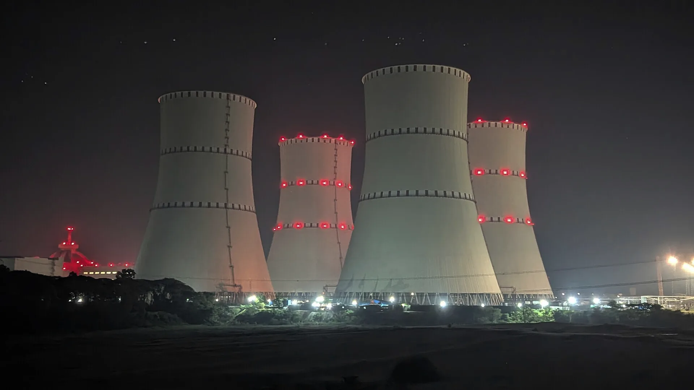
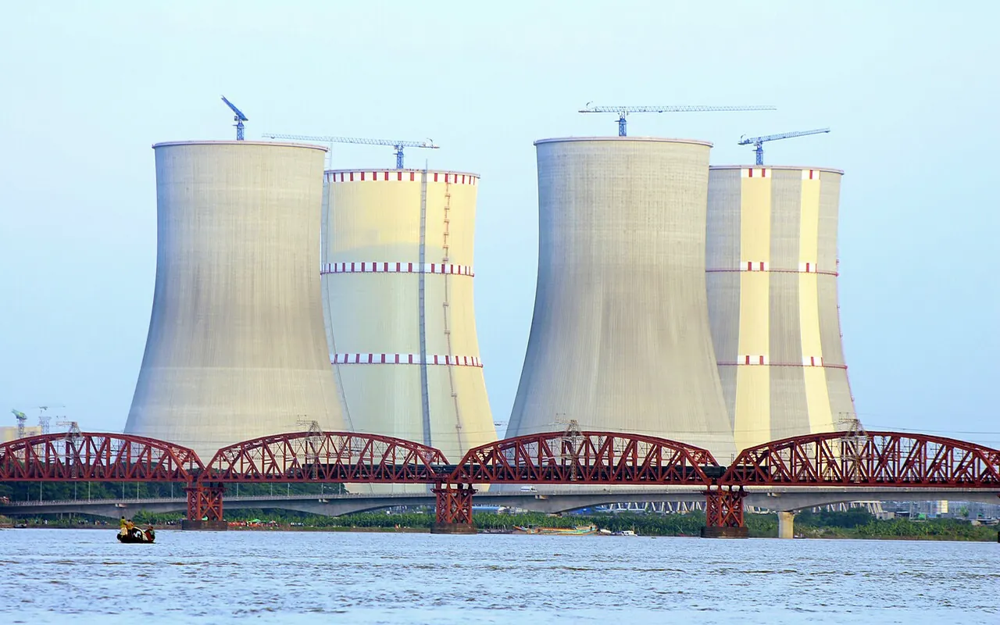
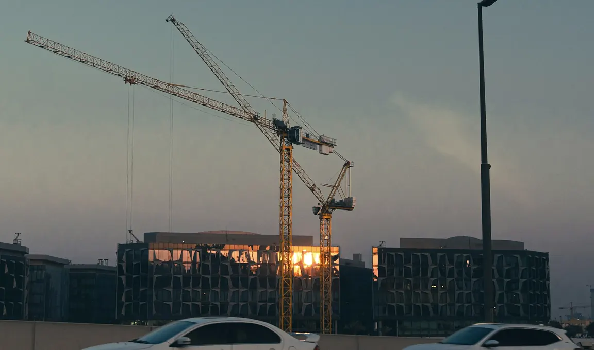
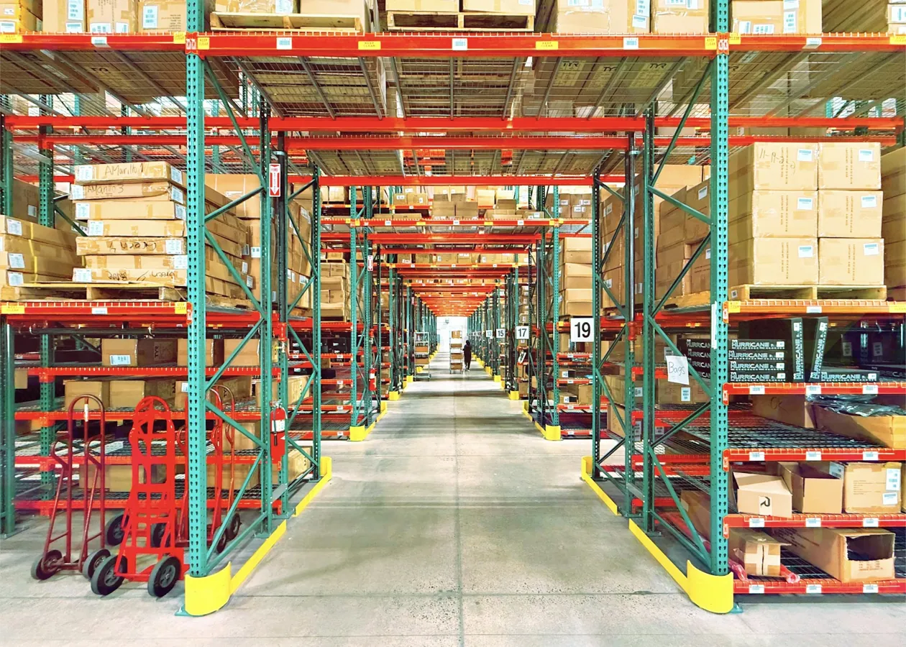
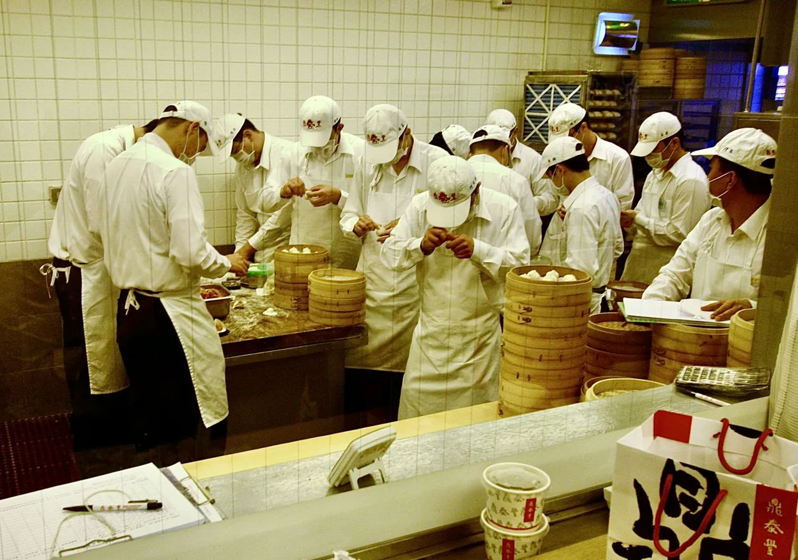

Источники фотографий
Фотографии проектов предоставлены внешними авторами. Кадры Unsplash иллюстрируют профессии и направления работ.
Для сайта выполнены кадрирование, цветокоррекция и сжатие WebP. Снимки с CC BY-SA сохраняют указанную лицензию.

Ночная подсветка градирен АЭС «Руппур», май 2026ROCKY · CC BY-SA 4.0 Площадка строительства АЭС «Руппур», 2023Dean Calma / IAEA · CC BY 2.0
Площадка строительства АЭС «Руппур», 2023Dean Calma / IAEA · CC BY 2.0
Градирни АЭС «Руппур» и мост ХардингаJusujon1980 · CC BY-SA 4.0 Строительство АЭС «Эль-Дабаа», Египет, 2025Управление пресс-службы и информации Президента России / www.kremlin.ru · CC BY 4.0
Строительство АЭС «Эль-Дабаа», Египет, 2025Управление пресс-службы и информации Президента России / www.kremlin.ru · CC BY 4.0 Действующая АЭС «Пакш», 2012. Архивная иллюстрация регионаIAEA Imagebank · CC BY-SA 2.0
Действующая АЭС «Пакш», 2012. Архивная иллюстрация регионаIAEA Imagebank · CC BY-SA 2.0
Башенные краны, ДубайLuan Fonseca · Unsplash License Контейнеровоз и портовые краны, ГамбургChristian Lue · Unsplash License
Контейнеровоз и портовые краны, ГамбургChristian Lue · Unsplash License
Складские стеллажи с грузамиRuss Murray · Unsplash License
Команда поваров за работой, ТайбэйAmos K · Unsplash License Специалист в защитной каске и очках, ШвецияJimmy Nilsson Masth · Unsplash License
Специалист в защитной каске и очках, ШвецияJimmy Nilsson Masth · Unsplash License Ночной вид энергетического объекта, АнтверпенNicolas HIPPERT · Unsplash License
Ночной вид энергетического объекта, АнтверпенNicolas HIPPERT · Unsplash License Градирни в тумане, ЧехияLukáš Lehotský · Unsplash License
Градирни в тумане, ЧехияLukáš Lehotský · Unsplash License


Photography credits
Project photography comes from the sources credited below. Unsplash photographs illustrate professional roles and services.
Images have been cropped, colour adjusted and compressed as WebP. Photographs published under CC BY-SA retain the licence listed below.
- Rooppur cooling towers at night, May 2026ROCKY · CC BY-SA 4.0
- Rooppur nuclear power plant under construction, 2023Dean Calma / IAEA · CC BY 2.0
- Rooppur cooling towers and Hardinge BridgeJusujon1980 · CC BY-SA 4.0
- Construction at El Dabaa, Egypt, 2025Управление пресс-службы и информации Президента России / www.kremlin.ru · CC BY 4.0
- Paks nuclear power plant, 2012. Regional archive imageIAEA Imagebank · CC BY-SA 2.0
- Tower cranes in DubaiLuan Fonseca · Unsplash License
- Container ship and port cranes, HamburgChristian Lue · Unsplash License
- Storage racks in a warehouseRuss Murray · Unsplash License
- Chefs preparing food, TaipeiAmos K · Unsplash License
- Specialist in protective equipment, SwedenJimmy Nilsson Masth · Unsplash License
- Power station at night, AntwerpNicolas HIPPERT · Unsplash License
- Cooling towers in fog, CzechiaLukáš Lehotský · Unsplash License
مصادر الصور
تعود صور المشروعات إلى المصورين والمصادر المذكورة أدناه. وتُستخدم صور Unsplash لتوضيح المهن والخدمات.
جرى اقتصاص الصور وضبط ألوانها وضغطها بصيغة WebP. تحتفظ الصور المنشورة بموجب CC BY-SA بالترخيص المشار إليه.
- أبراج تبريد محطة روبور ليلاً، مايو 2026ROCKY · CC BY-SA 4.0
- موقع إنشاء محطة روبور النووية، 2023Dean Calma / IAEA · CC BY 2.0
- أبراج تبريد روبور وجسر هاردينغJusujon1980 · CC BY-SA 4.0
- أعمال الإنشاء في محطة الضبعة، مصر، 2025Управление пресс-службы и информации Президента России / www.kremlin.ru · CC BY 4.0
- صورة أرشيفية من محطة باكش القائمة عام 2012IAEA Imagebank · CC BY-SA 2.0
- رافعات برجية في دبيLuan Fonseca · Unsplash License
- سفينة حاويات ورافعات ميناء هامبورغChristian Lue · Unsplash License
- رفوف البضائع في مستودعRuss Murray · Unsplash License
- فريق طهاة أثناء تحضير الطعام في تايبيهAmos K · Unsplash License
- اختصاصي يرتدي معدات الوقاية في السويدJimmy Nilsson Masth · Unsplash License
- محطة طاقة ليلاً في أنتويربNicolas HIPPERT · Unsplash License
- أبراج تبريد وسط الضباب في تشيكياLukáš Lehotský · Unsplash License